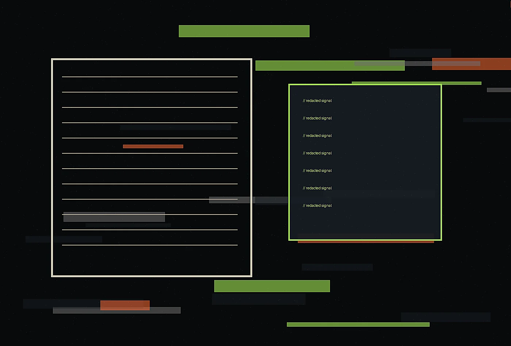

Read field essays, practical notes, and sharp perspectives from Cipher Quill. The journal is written for people who prefer useful specificity over generic trend language.
The Cipher Quill journal collects essays for leaders who want clear thinking, fresh language, and grounded examples. Each piece is written to be read by busy people who still care about nuance.

Essay 01
When a breach update reads like fog, the board invents its own weather
A short operational essay on noticing the point where a polished experience begins to fray, then repairing it with language, timing, and clearer ownership.
Signals that reveal friction before complaints arrive.
Small rituals that make premium experiences feel human.
Operational writing that improves trust without adding noise.
Material choices that carry meaning and survive use.
Receive the field letter
Once each month, we send a concise note with observations, questions, and examples from our work. It is written for decision makers who prefer substance over promotional noise.
We work with the documents and meetings that already shape security decisions: board packets, incident rooms, tabletop summaries, advisory drafts, internal explainers, and executive notes. Rather than adding another noisy channel, we improve the language, sequence, and evidence standards of the channels leaders already read.
Our editorial lens is useful before, during, and after pressure events. Beforehand, we define formats and vocabulary. During response, we keep updates factual and proportionate. Afterward, we help teams preserve the record, explain lessons, and improve governance without turning every retrospective into blame or brand management.
Cipher Quill uses essential storage for this cookie choice and optional analytics only with consent.